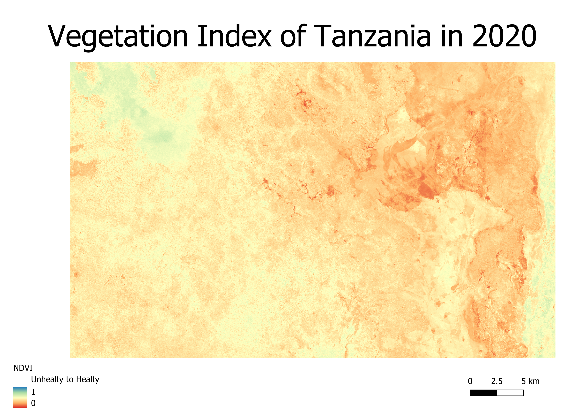
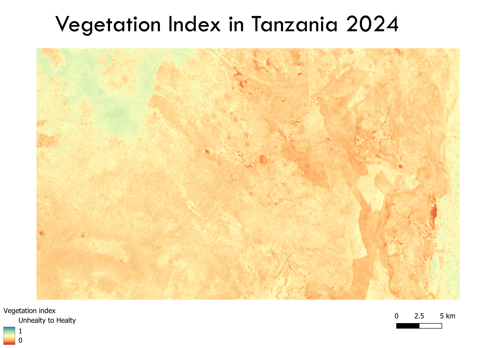

A showcase of multiple maps showing the vegetation in Tanzania in both 2020 and 2024. Including the change and satellite imagery comparing the two years
An Orthomosaic is an accurate, corrected aerial image by stitching together high-resolution photos from drones or other aerial sources. While these mosaics capture detailed images from above, multispectral satellite imagery takes this step further by capturing wavelengths invisible to the eye. Multispectral satellite imagery is a technology used to capture data from Earth through different wavelengths of the light spectrum. It captures invisible light and allows scientists to identify materials that are invisible to the naked eye. It can be used within many fields, from agriculture, where wrong crops can be spotted and taken out before they infect other crops, before they turn the wrong color. But also, within conservation, to track deforestation or map wildfires. It can even be used for urban planning, as city growth can be managed. Another implication of multispectral satellite imagery is to map out vegetation. Vegetation indices are used to examine vegetation over a given area remotely. It is spectral imaging of two or more image bands designed to enhance the contribution of vegetation properties. The normalized Difference Vegetation Index is a method to measure how green and healthy plants are in any given area. By analyzing images through satellite imagery, NDVI helps by identifying vegetation patterns and health across landscapes. The difference between this and other vegetation indices is that the NDVI uses the difference between near-infrared and red reflectance from the Earth’s surface. The NDVI formula uses light reflected from the Earth, to determine how lush or barren a region is. The value is always between –1 and +1, indicating sparsely concentrated vegetation to densely concentrated vegetation. With NDVI professionals can see the health of vegetation easily, being able to use it for various intentions, from tracking plan health in real time to making smart farming decisions and understanding different climates. Sentinel-2 is an example of a multispectral imaging satellite. It is a passive satellite, and its payload is both a multi-spectral instrument and an optical communication payload. Instead of producing its own energy signal, it runs by measuring the naturally reflected sunlight from the earth surface.
For this project, the goal is to map the NDVI of a nature reserve within Tanzania, in order to see how the vegetation changes from 2020 to 2024. This is important to understand whether the area is doing good ecologically, or is degrading. This information can be used by the government to take decisive action into conservation. I made three maps, showing the vegetation index, so that one can see the index in 2020,2024 and how it changed over the years. Furthermore, 2 maps with the true colors are shown, to understand the environment.
First, I chose an area in Google Earth Engine; I chose Tanzania because a deforestation index showed a lot of canopy loss within the area. So, I thought it would be interesting to see how much the vegetation changed from 2020 to 2024. Then I exported the imagery to QGIS and loaded the data as a raster layer. For the first two maps, I did a true-color composite, so one can see how the area looks “raw”.
For the next two maps, I made false-color composites to highlight the infrared reflectivity of the vegetation, in order to be able to showcase the NDVI better. This band combination makes live foliage appear bright red, which helps visually validate the analytical index. To make the map showcasing the NDVI, I used the raster calculator. The calculation is the following: NDVI: (NIR – RED) / (NIR + RED) utilizing the Near-Infrared and Red bands. For the range, I chose –1 and +1 to represent barren or unhealthy surfaces versus healthy vegetation.
For the last map, I registered the difference between the two periods within one map. To do this, I again used raster algebra, subtracting the 2024 NDVI from the 2020 NDVI. I adjusted the color ramp so that it is easy to understand what vegetation got worse and what vegetation got better.
When looking at the final change-detection map that shows the difference between 2020 and 2024, one can see a clear spatial distribution of environmental shifts. Interestingly, a lot of the area did slightly better than before, most recognizable in the north-west part of the map, where the color is clearly green. This could indicate localized seasonal regrowth or successful conservation management. However, on the lower part of the map it is clear red, with even some areas being bright red, indicating severe deforestation and loss of vegetation. However, when only looking at the separate vegetation indices, one can see how most of the vegetation is red, with only some green exceptions. This means that overall, the regional vegetation is not healthy, probably due to the lack of rain. The high baseline of unhealthy values suggests that despite small pockets of recovery, the broader ecosystem remains highly vulnerable to climate stress.




This map was interesting to make; the colors were also beautiful. It was not that challenging to make, but the waits between everything loading made the process take very long. I used many new skills, from using GoogleEngine and choosing my own area to using raster and band calculations. It was very satisfying to see everything come together in the last map. Some issues I encountered were that the region at the start was way too big, making the rasters keep crashing and not showing up. After a long wait, I therefore decided to minimize the region drastically, in order for it to work. If I had more time, I would love to clearly showcase where my area is located. The true color composites also look really cool, but quite unclear. It is hard to recognize what color represents.
Such a map can, however, be useful for conservation within the area. For example, if NGOs need to know whether their efforts have been successful, they can check whether the vegetation has grown over different years.